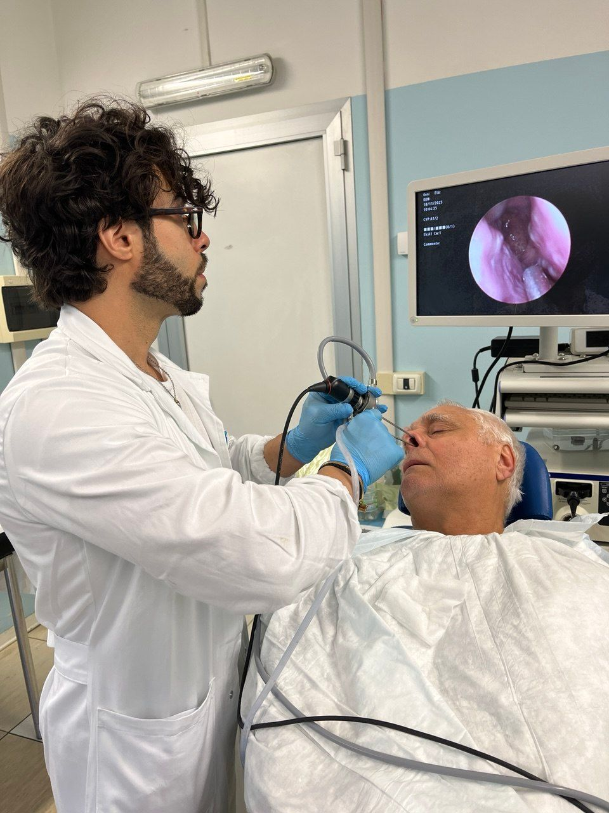
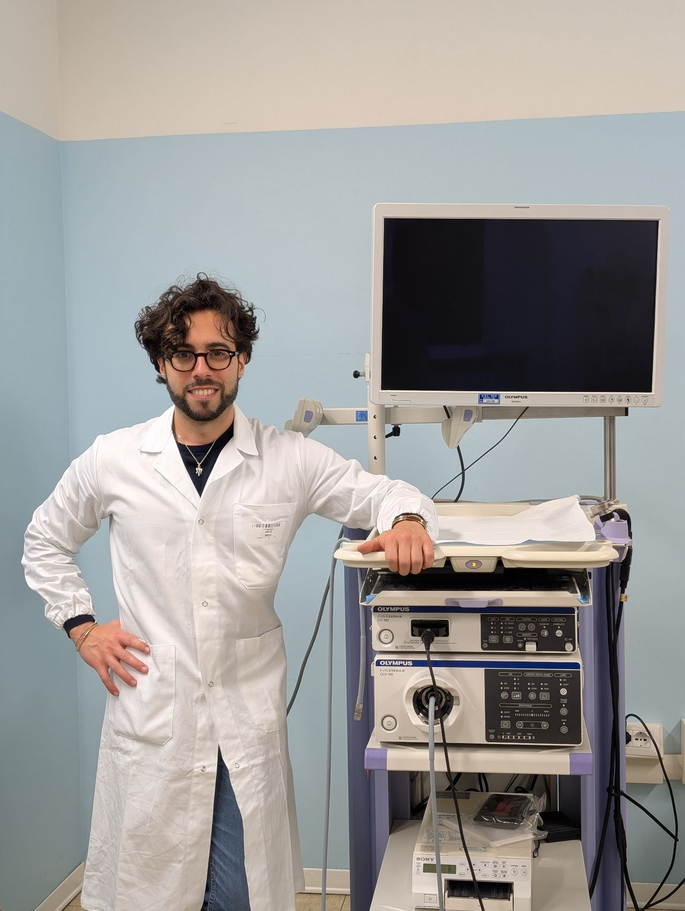
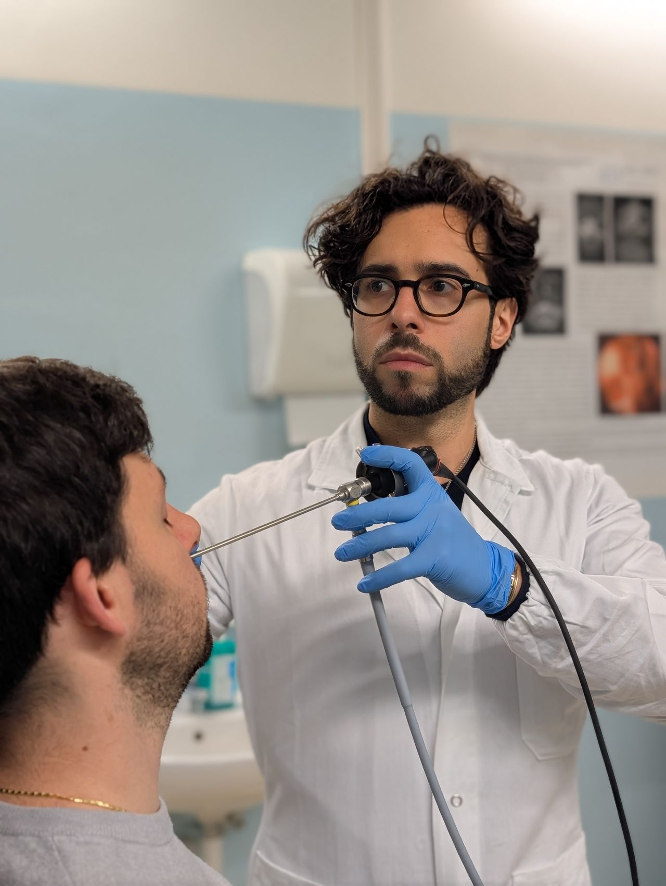

Respira, ascolta e ritrova la voce.
Cura specialistica di naso, orecchio e gola nel cuore dell'Ossola. Diagnosi accurata in un'unica seduta, con un approccio attento e profondamente umano.


Un riferimento per l'ORL nell'Ossola
Sono il Dr. Salvatore Catalano, Dirigente Medico Otorinolaringoiatra presso l'ASL del Verbano-Cusio-Ossola, con sede operativa all'Ospedale San Biagio di Domodossola. Mi occupo della diagnosi e del trattamento, anche chirurgico, delle patologie di testa e collo, con particolare attenzione al distretto naso-sinusale.
Laureato a Salerno (2018) e specializzato a Pavia (2023), ho completato l'ultimo anno a Lugano presso l'Ente Ospedaliero Cantonale, sviluppando un forte interesse per la chirurgia endoscopica naso-sinusale, i disturbi del sonno e le patologie della voce.
- Specializzazione in Otorinolaringoiatria — Università di Pavia (2023)
- Master II livello in Fonochirurgia — Università di Ferrara (in corso)
- Esperienza ospedaliera in Italia e Svizzera (EOC Lugano)
- Coautore di pubblicazioni scientifiche internazionali
Visite ed esami specialistici
Diagnostica completa per naso, orecchio e gola, con strumentazione dedicata e tempi rapidi.
Sinusiti e poliposi, senza tagli esterni
La chirurgia endoscopica funzionale dei seni paranasali (FESS) tratta sinusiti croniche e poliposi operando attraverso le narici, senza incisioni sul volto.
- Approccio mini-invasivo e mirato
- Tempi di recupero ridotti
- Migliora respirazione, olfatto e qualità della vita

La voce dei pazienti
25 recensioni verificate da appuntamenti reali. Attenzione, chiarezza e puntualità i tratti più apprezzati.
Dove trovarmi e quanto costa
Ospedale San Biagio
Piazza Vittime dei Lager Nazifascisti 1 — 28845 Domodossola (VB)
- Visite
- Su appuntamento
- Pazienti
- Adulti e bambini (dai 5 anni)
- Pagamenti
- Carta, bancomat, contanti
Consulenza online
Visita a distanza in videochiamata, su prenotazione
- Modalità
- Videoconsulto
- Ideale per
- Secondo parere, controlli
Prestazioni e tariffe
Pazienti privati senza assicurazione
Il costo di alcune prestazioni può variare in base al singolo caso. Pagamenti: carta di credito, bancomat, prepagata e contanti.
Le risposte alle domande più comuni
Prenota la tua visita
Compila il modulo o usa i contatti diretti: ti risponderò il prima possibile.
- 366 217 5507
- Scrivi su WhatsApp
- Consulenza online su prenotazione
- Ospedale San Biagio · Domodossola (VB)